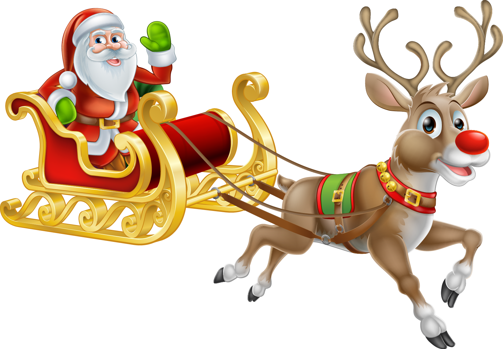
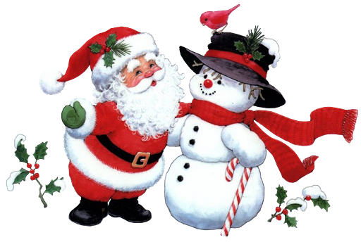
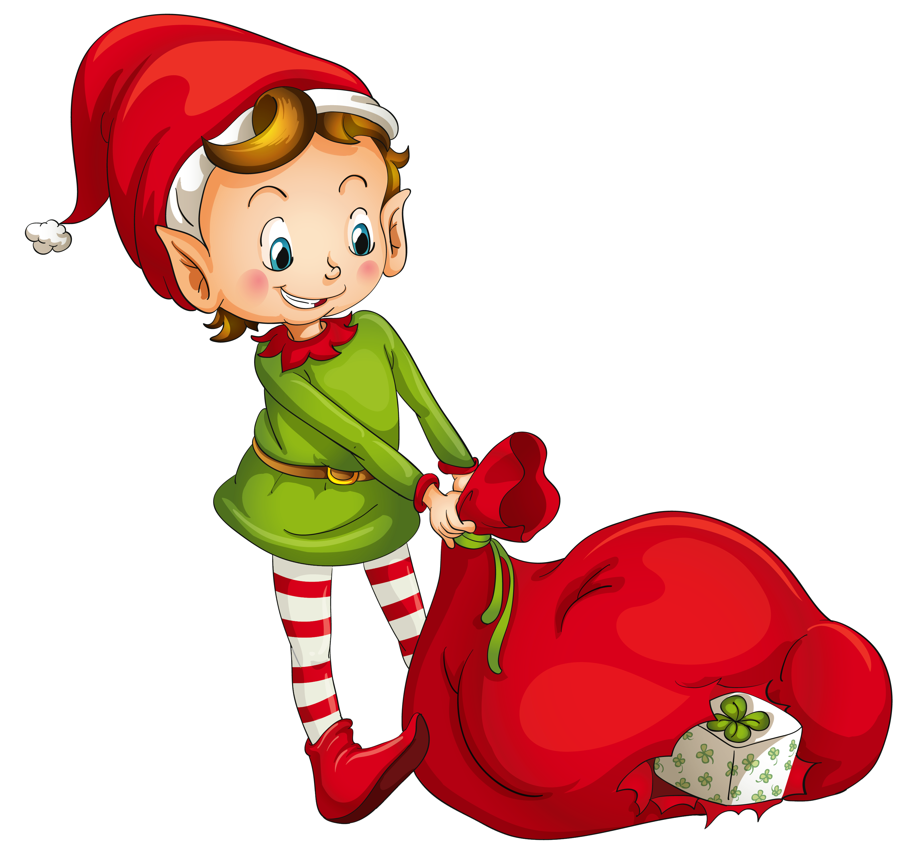

В соответствие со сказкой известного писателя Роберта Мэя, красноносый олень
Рудольф является вожаком в упряжке саней Санта-Клауса, которую несут по ночному
небу в рождественскую ночь девять северных оленей.
Нос Рудольфа, который сначала служил предметом насмешек со стороны других оленей,
помогает ему, согласно сказке, освещать путь Санта-Клаусу. Натаниель Домини
(Nathaniel Dominy) из Дартмутского колледжа в Ганновере (США) нашел способ
описать предназначение этого необычно красного и яркого носа с научной точки
зрения, изучив те особенности в анатомии и жизни северных оленей, которые
стали известны ученым совсем недавно.
...
К примеру, в октябре 2013 года ученые выяснили, что цвет глаз северных оленей
меняется вместе с сезонами года, становясь желтыми во время лета, и синими во
время зимы. Благодаря такой смене окраски, которая происходит из-за
"растягивания" подложки сетчатки, так называемого тапетума, олень приобретает
зимой возможность видеть ультрафиолет, а чувствительность его глаз к синему
свету заметно вырастает за счет снижения в четкости зрения. Как считает
Домини, нет причин полагать, что Рудольф и его собратья по упряжке не
обладают таким качеством, которое должно помогать им ориентироваться в темную
рождественскую ночь во время кругосветного полета Санта-Клауса.


18 января отмечают День снеговика. Предположительно в конце
XV века, где-то в 1493 году, итальянский скульптор и архитектор,
а ещё поэт по имени Микеланджело Буонарроти, впервые в мире слепил
снежную фигуру.
В то же время некоторые источники утверждают, что снеговик был
придуман святым Франциском Ассзиским. Хотя слово «schneemann»,
что означает снежный человек, немецкого происхождения,
а «snowman» - английского. В Европе снеговик всегда стоял возле
дома, его щедро украшали гирляндами, домашней утварью и укутывали
в шарф, в руки вручали ветвистую метлу. Все детали одеяния снеговика
имеют мистический характер.
...
Так, нос в виде морковки прикреплялся снеговику, чтобы умилостивить
духов, которые посылают урожай и плодородие. Перевернутое ведро,
расположенное на голове символизировало достаток. В Румынии снеговиков
украшают бусами из чеснока, что способствовало здоровью всех членов
семьи и оберегало их от проказ нечистой силы.
В Соединенных Штатах, Канаде, Великобритании и Ирландии современная
легенда о Санта-Клаусе обычно включает миниатюрных эльфов на Рождество.
Одетые в зеленое эльфы с острыми ушами и остроконечными шляпами в
качестве помощников Санты. Они делают игрушки в мастерской Санты,
расположенной на Северном полюсе.
Для того, чтобы подарить детям подарки, Санта Клаус должен быть уверен
в том, что малыш вел себя хорошо. А как об этом узнать? Остается один
единственный способ – дать секретное задание одному из своих
помощников-эльфов (scout elves) проследить за ситуацией в доме.
...
Американским мамам и папам эта идея приглянулась и превратилась в настоящую
традицию «the elf on the shelf».
Идея «the elf on the shelf» проста. Эльф обычно появляется в доме в течение
Scout Elf Return Week (примерно в промежутке между 24 ноября и 1 декабря).
Каждую ночь мама или папа прячут эльфа на новом месте. Дети просыпаются каждое
утро и обыскивают дом, чтобы увидеть, где снова появился эльф. Каждую ночь
эльф улетает на Северный полюс, чтобы рассказать Санта-Клаусу, были ли дети
послушными или нет.
Это милый способ сохранить дух Санты. Золотое правило, которому нужно следовать:
дети не могут трогать эльфа. В ночь перед Рождеством эльф улетает в последний
раз до следующего года.
